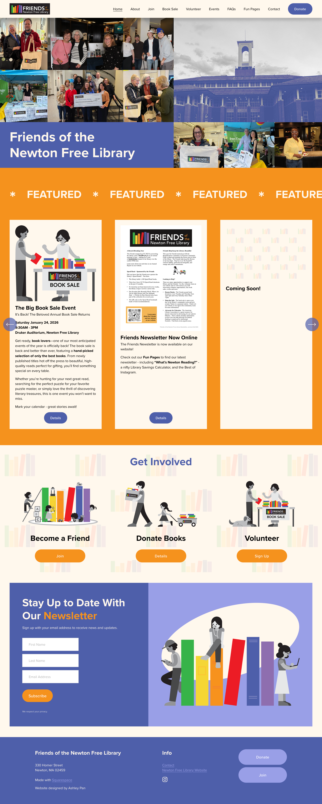

Friends of the Newton Free Library
I was chosen to design the Friends of the Newton Free Library's new website using Squarespace. Using their logo, I created various branding assets to reflect their values of community and volunteerism.



I was chosen to design the Friends of the Newton Free Library's new website using Squarespace. Using their logo, I created various branding assets to reflect their values of community and volunteerism.
